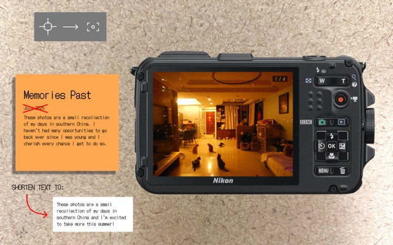

Visual Design Critiques & Report
Who critiqued your work and what qualifications do they possess that makes their opinions on design valid?Jon and Ava from DES157A critiqued my work. They have both done excellent work throughout the course and are familiar with the content and material taught. Their shared experiences and grasp of the design principles are applicable for this critique.
Design critique notes:- Positioning the photo stack inside the LCD screen is a good affordance. The viewer can understand the interaction intuitively.
- The post-it note styling for the header furthers the narrative of reminiscing something personal. It also helps the text stand out against the background while remaining on-theme.
- The textured background adds depth and visual interest to the design. It solidifies the interaction with a physical camera aspect of the visual design.
- The end overlay looks a lot more integrated with the camera than before.
- It would make more sense for the cursor to look like a camera's actual focus point rather than a crosshair.
- The information hierarchy has a bit too much going on. Possibly omit the date and shorten the personal message.
- The shutter audio is dependent on if the volume isn't muted. To ensure that there is feedback, consider adding a visual flash effect on the photo stack to compliment the audio.
